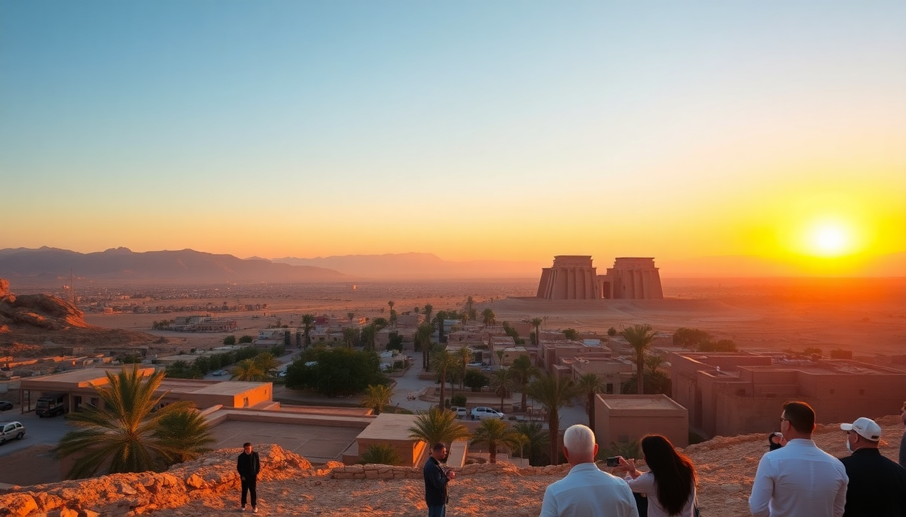

Best Day Trips from Luxor: Valley of Kings, Karnak & Dendera

I landed in Luxor at 7 AM, dropped my bag at the Sofitel Winter Palace, and realized I had three days to cover what felt like a lifetime of monuments. The West Bank, the East Bank, and a temple that’s a two-hour drive north. Here’s how I split it up without burning out.
What’s the best way to see the Valley of the Kings in half a day?
The Valley of the Kings is a dry, dusty furnace by 10 AM. I learned this the hard way. Go early — gates open at 6 AM. I hired a private driver through my hotel for $30 round trip, which included waiting time. The drive from the East Bank across the Nile via the Luxor Bridge takes about 30 minutes.
Inside, your ticket covers three tombs. I skipped the famous Tutankhamun (KV62) — it’s an extra $15 and the actual mummy is in a glass case; the wall paintings are faded. Instead, I hit Ramesses IV (KV2), Ramesses IX (KV6), and Merneptah (KV8). The colors in Ramesses IV’s burial chamber are still vibrant — deep blues and yellows that look like they were painted last week.
- Valley of the Kings — arrive at 6 AM sharp to beat crowds and heat
- Ramesses IV (KV2) — best preserved paintings, wide corridors
- Ramesses IX (KV6) — long descent into the earth, cool air
- Merneptah (KV8) — massive sarcophagus, fewer tourists
- Tutankhamun (KV62) — skip unless you’re a completionist
Bring water. The gift shop near the entrance sells cold bottles for 10 EGP — buy two.
Is the Colossi of Memnon worth stopping at on the West Bank?
Yes, but only for 15 minutes. They’re two massive stone statues of Amenhotep III, sitting alone in a field. No entrance fee, no queue. I asked my driver to pull over on the way back from the Valley of the Kings. They’re impressive in scale — 60 feet tall — but there’s nothing else around. Snap a photo, listen to the faint “singing” sound the Greeks wrote about (it’s just wind through cracks), and move on.
How do I tackle Karnak Temple without getting lost?
Karnak is a maze. It’s not one temple — it’s a complex of sanctuaries, pylons, and obelisks built over 2,000 years. I went at 8 AM (opens at 6, but I needed breakfast at Kings Head Pub on the Corniche). The Great Hypostyle Hall is the main event: 134 columns, each 70 feet tall. The hieroglyphs on the central columns are still readable — I used the Lonely Planet Egypt guidebook to decode the battle scenes of Seti I.
- Great Hypostyle Hall — 134 columns, best light at 8 AM
- Sacred Lake — small but gives a clear reflection of the ruins
- Obelisk of Hatshepsut — 97 feet of red granite, still standing
- Open-Air Museum — extra ticket (50 EGP), but worth it for the restored White Chapel
I spent two hours here and felt rushed. If you want to see the Sound and Light Show at night, skip it — the narration is cheesy and the audio cuts out. Better to walk the complex at dusk when the crowds thin.
What’s the deal with Dendera Temple — and how do I get there?
Dendera is a two-hour drive north of Luxor, near the town of Qena. It’s the best-preserved temple complex in Egypt because it was buried under sand until the 19th century. I hired a driver for $50 from my hotel — that included the round trip and waiting time. The road is straight, flat, and boring, but the payoff is huge.
The Temple of Hathor is the star. The ceiling is intact — dark blue with zodiac carvings and astronomical scenes. There’s a crypt underneath where priests stored sacred objects, and a rooftop chapel with views over the Nile. I had the entire place to myself for 30 minutes because most tour groups skip it.
- Temple of Hathor — intact ceiling with zodiac, no crowds
- Crypts — accessible via stairs near the sanctuary, cool and dark
- Rooftop Chapel — climb the spiral staircase for a 360-degree view
- Roman Mammisi — birth house with Cleopatra and Caesarion carvings
- Dendera Lightbulb — a relief that conspiracy theorists love; it’s just a lotus flower
Bring snacks. Qena has a few kebab shops near the bus station, but I didn’t trust the hygiene. I packed pita and hummus from Aboudi Bakery in Luxor.
Should I combine Dendera with Abydos Temple in one day?
I tried this. Don’t. Abydos is another 90 minutes north of Dendera, making the round trip from Luxor six hours of driving. The Temple of Osiris at Abydos is stunning — the List of Kings carving is a historical cheat sheet of pharaohs — but by the time I got there, I was exhausted and dehydrated. The road from Dendera to Abydos is unpaved in sections, and my driver’s AC broke.
If you have only one free day, pick Dendera. If you have two, do Abydos as a separate trip. Both are better than the Luxor Museum (overpriced at 160 EGP, small collection).
What’s the best way to get around Luxor for day trips?
I used a mix of options. For the West Bank (Valley of the Kings, Colossi of Memnon), a private driver is the easiest — negotiate to $25-30 for a half day. For Karnak, it’s walkable from most hotels on the East Bank if you’re near Luxor Temple. For Dendera, you need a car — no public bus runs directly.
- Private driver — $25-30 half day, $50-60 full day; negotiate at the hotel desk, not the street
- Taxi — 20-30 EGP for short hops within the East Bank; agree on price before getting in
- Feluca — a sailboat across the Nile; $10 for a 30-minute crossing to the West Bank
- Bicycle — I saw tourists renting bikes at $5/day near Mövenpick Resort, but the traffic on the bridge is chaotic
I don’t recommend the Luxor to Qena train — it’s cheap ($2) but runs on Egyptian time (i.e., two hours late). My driver was waiting at Qena station for 45 minutes.
FAQ
Is the Valley of the Kings safe for solo travelers? Yes. The site is patrolled by tourist police, and the paths between tombs are wide and well-lit. I went alone and felt fine. Just keep your valuables in a zipped bag — pickpocketing happens near the tram entrance.
Can I visit Dendera without a guide? Absolutely. The temple has English signage at every major point. I used the Egyptian Ministry of Tourism app for audio commentary (free download, works offline). Guides at the gate will offer to walk with you for $10 — I declined and didn’t miss anything.
What should I wear in Luxor during summer? Light, loose cotton. I wore a long-sleeved linen shirt and cargo pants. Sunscreen is essential — the UV index hits 11 by 10 AM. Women don’t need a headscarf at temples, but covering shoulders and knees is respectful. I saw tourists in shorts turned away at Karnak’s ticket booth.
Conclusion
- Start the Valley of the Kings at 6 AM; skip Tutankhamun’s tomb unless you have cash to burn
- Karnak is a two-hour minimum — focus on the Hypostyle Hall and Sacred Lake
- Dendera is the best day trip from Luxor: uncrowded, intact ceiling, easy drive
- Don’t combine Dendera and Abydos in one day — the driving time kills the experience
- Private drivers are cheap and reliable; negotiate at your hotel, not on the street